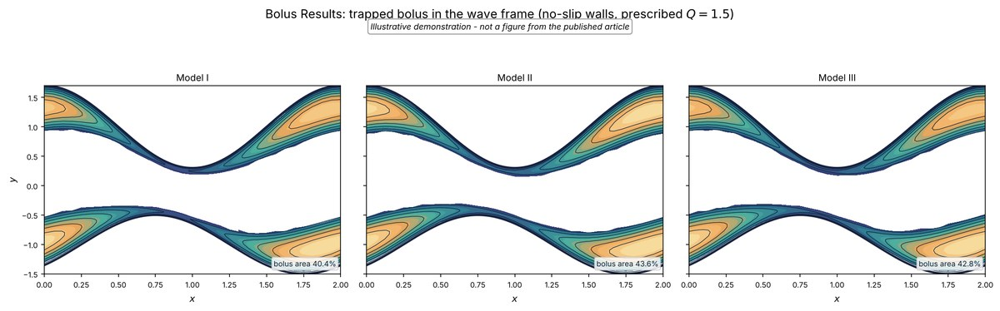

Released · Python
Magneto-nanolubricant peristaltic flow solver
Companion code for Hasnain, Al-Atawi & Saqib, Scientific Reports (2026)
A finite-volume solver for peristaltic flow of synovial fluid between the wavy membrane and the cartilage of the knee: velocity, temperature, nanoparticle concentration, induced magnetic field and a FitzHugh–Nagumo-type neural-activation field, with three non-Newtonian viscosity models. Every governing equation and boundary condition is written out in the code, next to the step that solves it.
- Beavers–Joseph slip or no-slip walls, convective (Biot) heat exchange, and a positivity-preserving scheme for the concentration
- dp/dx from the flux constraint, and the free-pumping flow rate (zero net pressure rise over one wavelength), both by secant iteration
- Includes
bolus_results.py, which draws the Bolus Results figure shown here - The Bolus Results figure is an illustrative demonstration, not a figure from the article